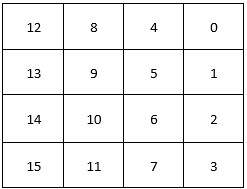
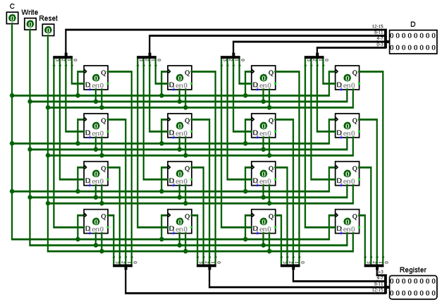
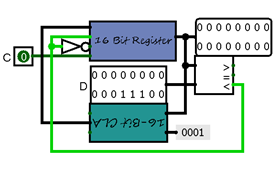
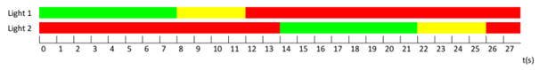
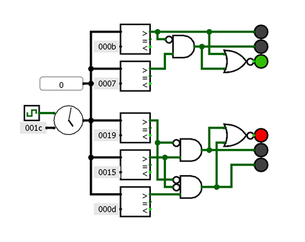
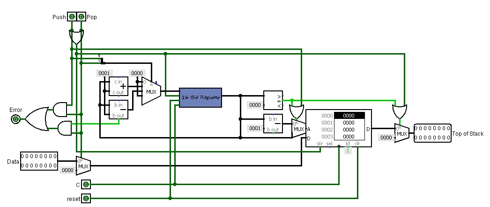

Project 4: Memory
16-Bit Register
Een 16-bit register bestaat grotendeels uit 16 D flip-flops. Hun trigger is de falling edge van het kloksignaal (1 => 0). We hebben de de 16 flip-flops als op de tabel gepositioneerd voor elke bit van de 'D'-input en de register output. Het vermelde kloksignaal is een 1-bit input. De D-input is een 16-bit input voor de data die in de D flip-flops worden opgeslagen als het write-bit op 1 staat. De register-output is een output voor de data op de flip-flops. Zoals vermeld is er nog een write-bit die aangeeft of de input moet worden opgeslagen of niet. Ten laatste is er een reset bit die alle D flip-flops die op 1 staan omzet naar 0. Alle onderdelen tezamen (met splitters) resulteert in dit circuit:
 Register File
Om een register file te maken van 16 16-bit registers hebben we een circuit gemaakt die bestaat uit 2 delen: een deel voor de registers te kunnen wijzigen (Write) en een deel voor ze te lezen (Read).
Write:
Dit deel geeft de data (in 16-bit) die moet worden opgeslagen. Daarnaast een write bit om te kiezen of de registers gewijzigd kunnen worden of niet en nog een reset bit die alle .
Verder is er nog een 4-bit input (24 = 16) met decoder om te selecteren welke register je wilt overschrijven met de nieuwe input.
Read:
Als je data wilt opslaan wil je inderdaad ook weten wat er in je register zit. Hiervoor gebruiken we 2 multiplexers met als inputs de 16 registers en een index om te kiezen welke register je de data van wilt weten. De output is een 16-bit output die de data van de gekozen register geeft.
Counter
Voor een counter heb je inderdaad een kloksignaal nodig voor de register. Aan deze register wordt steeds 1 opgeteld, dit gebeurt aan de hand van de 16-bit CLA van project 2. Aan deze CLA hangt er een binaire 1 en de output van de register. Het optellen gebeurt bij elk kloksignaal zolang dat de register-output kleiner is dan de gegeven D. Deze D is zelf te kiezen.
Traffic Lights
Aan de hand van onze counter van de vorige oefening kunnen we een verkeerslichtensysteem maken. Aan de counter geven we de maximum waarde die je counter kan aannemen en het kloksignaal van het klokonderdeel in Logisim. Bij het eerste verkeerslicht zijn de tijdstippen wanneer het licht verandert: 8 (groen - geel), 12 (geel - rood) en 28 (of 0) (rood - groen). Bij het tweede is dit 14 ( rood - groen), 22 (groen - geel) en 26 (geel - rood).
Bij het eerste verkeerslicht is 28 ook gelijk aan nul dus hebben we enkel 7 en 11 nodig. Bij 8 en 12 zijn de lampen al een andere kleur dus moet de gele lamp activeren na 7, (idem bij 11). We werken op de zelfde manier bij de 2de lamp en voegen nog de logische poorten toe, zo komen we op volgend circuit:
Stack
De bonusopdracht van dit project is het maken van een stack. De load input van het RAM element staat altijd op 1 om standaard het bovenste element van de stack terug te geven. Het enige probleem dat we hadden was dat de top van de stack niet altijd correct werd teruggegeven. Dit hebben we opgelost door een multiplexer toe te voegen die ofwel het juiste adres doorlaat om naar te schrijven ofwel het adres - 1 doorlaat om het bovenste element te geven.
